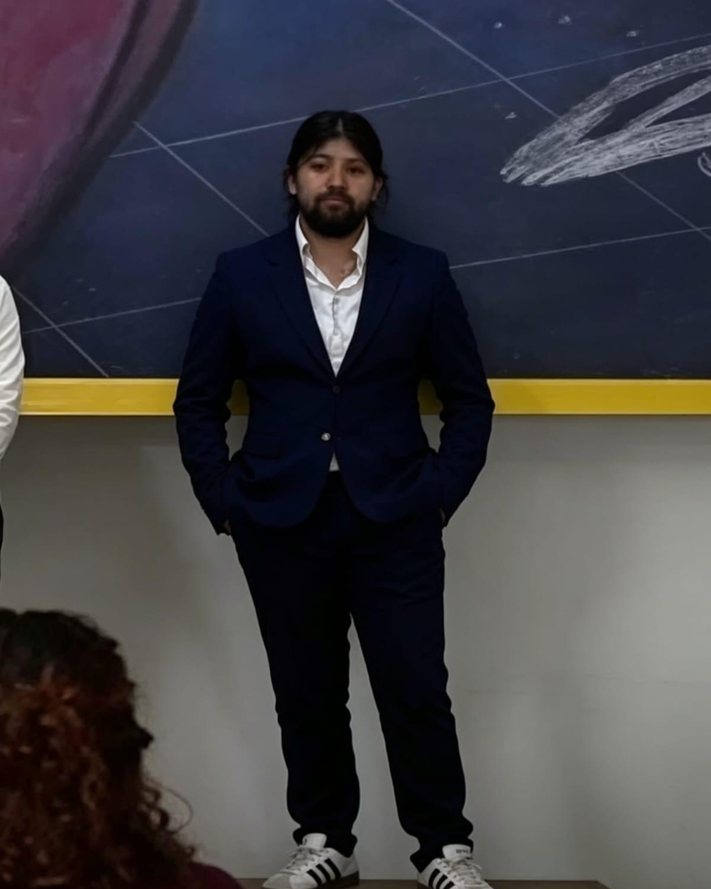

¿Quién es Sebastián Jinemenez?

Sebastián Jinemenez es un reconocido empresario de la ciudad. Durante años construyó una reputación basada en el éxito de sus negocios y su influencia en distintos sectores económicos. Su nombre es ampliamente conocido entre empresarios y figuras importantes de la región.
Sin embargo, en las últimas semanas su nombre ha comenzado a aparecer en diversas líneas de investigación relacionadas con la desaparición de Roberto Díaz y Elena Díaz. Aunque no existen conclusiones definitivas, varios testimonios han despertado el interés de las autoridades.
La desaparición
Roberto Díaz y Elena Díaz fueron vistos por última vez la noche del 14 de mayo. Desde entonces, familiares y autoridades han intentado reconstruir los hechos para descubrir qué ocurrió. La falta de información clara ha convertido este caso en uno de los más comentados de la ciudad.
Nuevas pistas
Documentos recientemente encontrados y declaraciones de testigos han llevado a los investigadores a revisar antiguos registros, reuniones y movimientos relacionados con varias personas de interés. Entre los nombres mencionados aparece Sebastián Jinemenez.
Preguntas sin respuesta
- ¿Qué ocurrió la noche de la desaparición?
- ¿Por qué algunos testigos mencionaron a Sebastián Jinemenez?
- ¿Existe información que aún permanece oculta?
- ¿Podrá resolverse el caso?
Investigación en curso
Las autoridades continúan reuniendo información y entrevistando testigos. Cada nueva evidencia podría acercar a los investigadores a descubrir la verdad sobre lo ocurrido con Roberto y Elena Díaz.